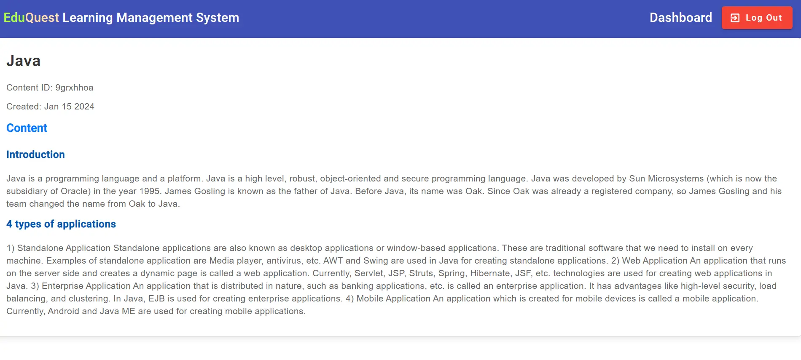
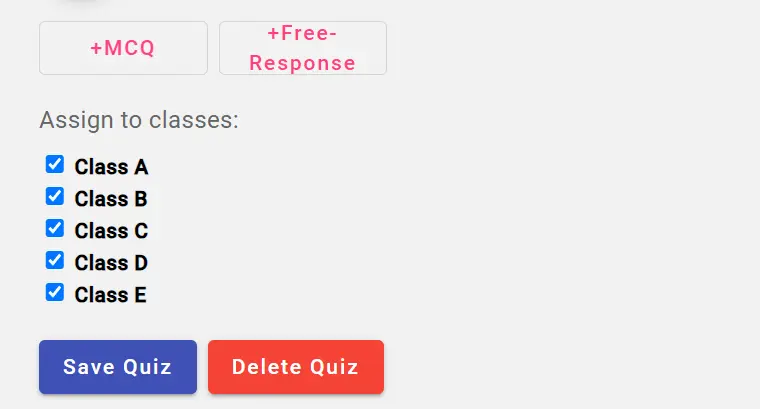
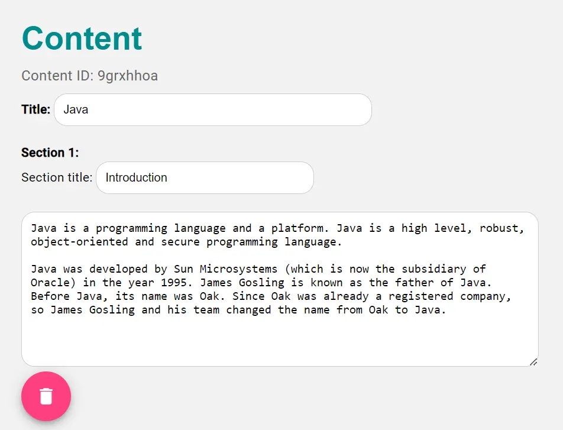
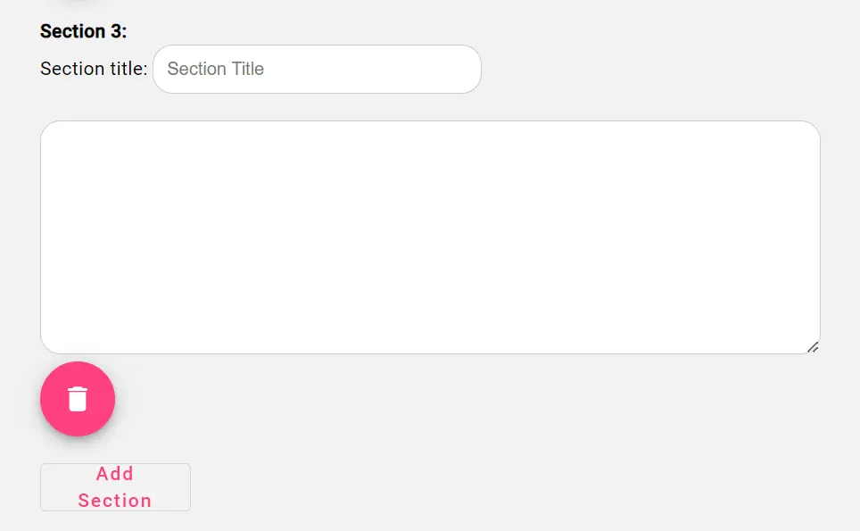
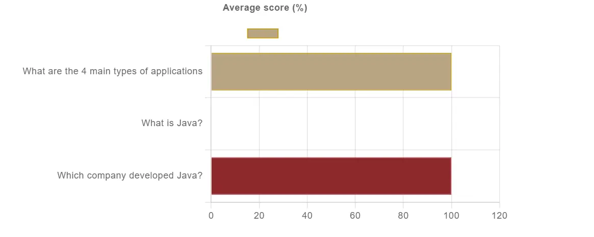
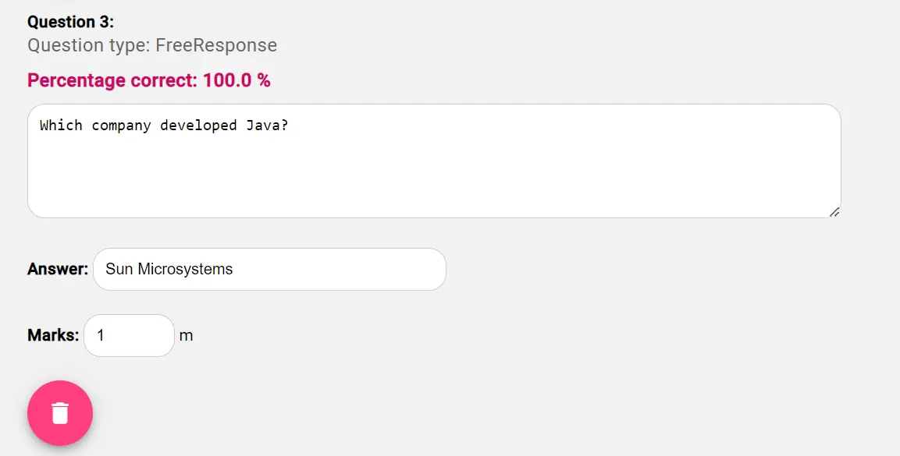
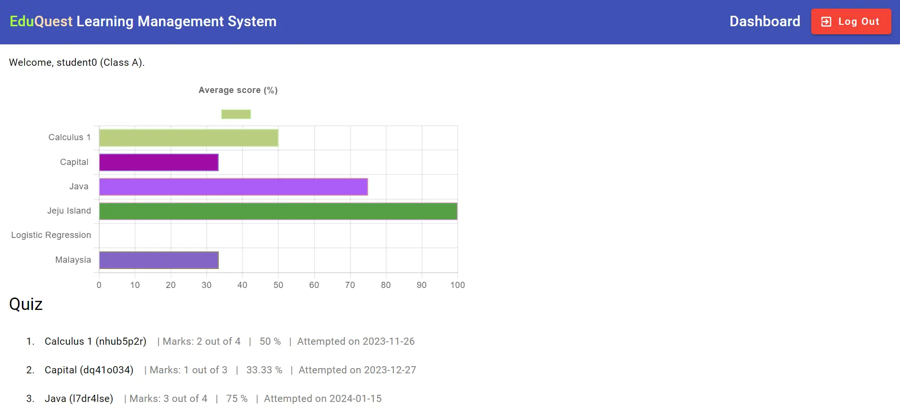

EduQuest is a Learning Management System (LMS) developed with Angular(frontend) and Spring Boot (backend) with SQL and MongoDB as databases. Teachers are able to create content and quizzes for students while students are able to make use of these content developed. Student attempt data are displayed to both teachers and students for analytics.
Why did I decide to create an LMS? As an educator, I have always wondered how an LMS is developed. Now, armed with programming skills, I decided to develop one myself to see how much can I value-add to the industry.
The following lists the features implemented and technology used.
Using EduQuest
On teacher account log in, the teacher will be directed to the dashboard to view data related to student quiz and notes access presented in the form of bar charts. They will also be able to view their created quiz and notes in lists form.
There are three barcharts displayed at the top of the page. They are the number of times each quiz has been attempted, each quiz's average score and the number of times each note has been accessed. The listed quiz and notes provide information on the date they were created and modified, if any.
Teachers can click on a created content to edit the text, add sections or to reassign the classes which have access to it.
Teachers can create a new content by clicking on 'Content' at the navigation menu. After that, fill in the section header and text. Users can add and delete sections, or even delete the entire content.
Teachers can click on a created quiz to analyse quiz performance by questions. A barchart is created which displays the percentage of students who answered each question correctly. Teachers can also make modificatons to the quiz by editing the question text, answer and adding or deleting questions.
Teachers can create a new quiz by clicking on 'Quiz' at the navigation menu. There are two types of question types that can be created, namely multiple choice questions (MCQs) and free-response. Each question requires the question text, answer and marks. After assigning and saving the quiz, the teacher will be directed to the dashboard page.
The student dashboard displays the student's quiz results as well as available notes and quiz. New quiz are reflected with 'New'.

Students can click on the links to the created notes to view their readings. They are almost the same as the teacher's notes view, without the ability to edit them.
Students answer the questions in the quiz by choosing the correct MCQ option or filling in the blanks for free-response questions. The quiz will be graded automatically, allowing students to view their results.
The Educational Technology sector is relatively saturated. Newer companies differentiate their LMS offerings by providing AI features such as adaptive learning. From my experience in developing EduQuest, I realised that a LMS is a complex system which has many interlinked features involving the four models of content, assessment, teachers and students. It is easy to create one, but challenging to create a good one that will benefit students. Even after having developed a good LMS, there are many facets to learning that will not be discussed here. View the video below for a demonstration of EduQuest.